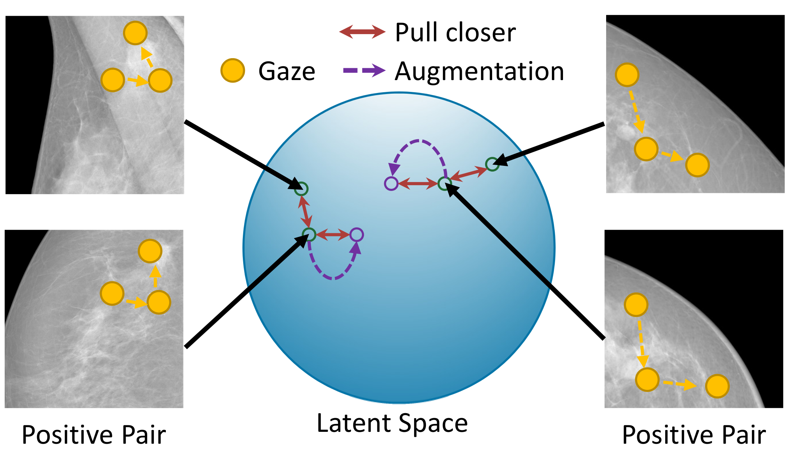

Zihao Zhao
Ph.D. Candidate
Forckenbeckstraße 69, 52074 Aachen
University Hospital Aachen
[Lab for AI in Medicine]
Email: zzhao@ukaachen.de


Zihao ZhaoPh.D. Candidate
Forckenbeckstraße 69, 52074 Aachen |
|
I am currently a Ph.D. candidate at University Hospital Aachen, under Prof. Daniel Truhn's supervision. Before that, I graduated from ShanghaiTech University, supervised by Prof. Dinggang Shen. I once interned at Siemens Healthineers to enrich my experience out of academia. My research interest primarily focuses on computer-aided diagnosis models with human perception, which encompasses two main aspects:
[Feb/14/2025] One paper accepted by IPMI 2025.
[Jan/07/2025] Two papers (co-first author) accepted by IEEE TMI and Pattern Recognition.
[Aug/20/2024] ChatCAD has finally been accepted by COMMSENG!
[May/05/2024] One paper accepted by IEEE TMI.
[Dec/09/2023] One paper accepted by AAAI 2024.
[Dec/05/2023] My Google Scholar profile reached 100 citations!
[Jul/25/2022] I officially join Prof. Dinggang Shen's research lab.
|  |
Mining Gaze for Contrastive Learning toward Computer-assisted
Diagnosis Zihao Zhao, Sheng Wang, Qian Wang, Dinggang Shen Proceedings of the AAAI Conference on Artificial Intelligence (AAAI), 2024. |
|
Improving Self-Supervised Medical Image Pre-Training by Early Alignment with Human Eye Gaze Information Sheng Wang*, Zihao Zhao*, Zhenrong Shen, Bin Wang, Qian Wang, Dinggang Shen IEEE Transactions on Medical Imaging (TMI), 2025. |
|

|
Learning Better Contrastive View from Radiologist’s Gaze Sheng Wang*, Zihao Zhao*, Zixu Zhuang, Xi Ouyang, Lichi Zhang, Zheren Li, Chong Ma, Tianming Liu, Dinggang Shen, Qian Wang Pattern Recognition (PR), 2025. |
|
Taming Masked Image Modeling for Chest X-ray Diagnosis by Incorporating Clinical Visual Priors Zihao Zhao, Mei Wang, Zhiming Cui, Sheng Wang, Qian Wang, Dinggang Shen Information Processing in Medical Imaging (IPMI), 2025. |
|

|
Interactive Computer-Aided Diagnosis on Medical Image
using Large Language Models (Editor's Choice 2024) Sheng Wang*, Zihao Zhao*, Xi Ouyang, Qian Wang, Dinggang Shen Communications Engineering (COMMSENG), 2024.
[paper] [code] [editor's choice]
|
|
ChatCAD+: Towards a Universal and Reliable Interactive CAD using
LLMs Zihao Zhao, Sheng Wang, Jinchen Gu, Yitao Zhu, Lanzhuju Mei, Zixu Zhuang, Zhiming Cui, Qian Wang, Dinggang Shen IEEE Transactions on Medical Imaging (TMI), 2024. |
|
|
CLIP in Medical Imaging: A Survey Zihao Zhao, Yuxiao Liu, Han Wu, Mei Wang, Yonghao Li, Sheng Wang, Lin Teng, Disheng Liu, Zhiming Cui, Qian Wang, Dinggang Shen Medical Image Analysis (MedIA), 2025. |
|